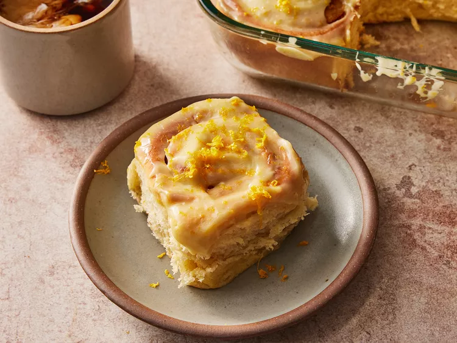

Super simple but delicious way to add flavor before grilling.

Cinnamon rolls
Wonderfully tender, sweet, and sticky
Covered in a gooey and super sticky orange cream cheese glaze,
they are an amazing brunch treat that will make your entire house smell incredibly fragrant.
Croissant French toast
An easy and impressive breakfast or brunch
This recipe is the perfect choice for special occasions or holidays.
Serve warm with your favorite toppings. Some suggestions are powdered sugar, chopped nuts,
cinnamon sugar, berries, maple syrup, blueberry or strawberry syrup, and whipped cream.